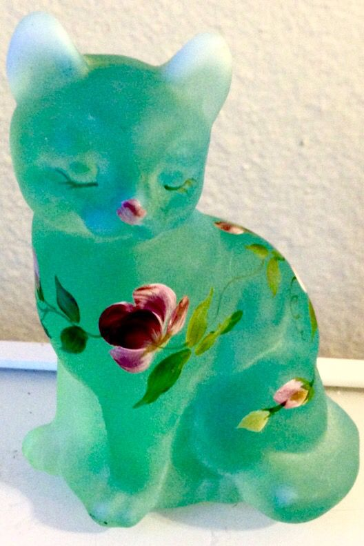

datamosh falls, first version
so i told mr claude that
'I want to make a waterfall, but the liquid in motion is a datamoshing effect. Almost like a digital waterfall of pixels ebbing in and out of existence....I'm attaching a photo for the color palette I'm going for'

it took a while for me to get the workflow right. initially i had mr claude zipping me a new project folder for every change which i knew was insane. switched to vscode and cheated on mr claude with sgt copilot for a min. copy and pasting github commands from mr claude into the terminal. zero idea what is happening. after getting stuck for quite a while, i brought everything back to claude code which was hiding the entire time from inside the house. now it commits to github for me.
as for the results, its really cool. sort of happy wheels blood type beat. originally, there were watercolor styled rocks and vines generated which was achieved by taking the corners of the object and dragging the midpoint out in different directions, then reiterating a couple times at different opacities. as for the actually waterfall, the pixels move downward, and change velocity after an interaction with the grid, in this case the rocks. its an enlightening example for me that a few simple rules applied to many many units can create or easily replicate real life.